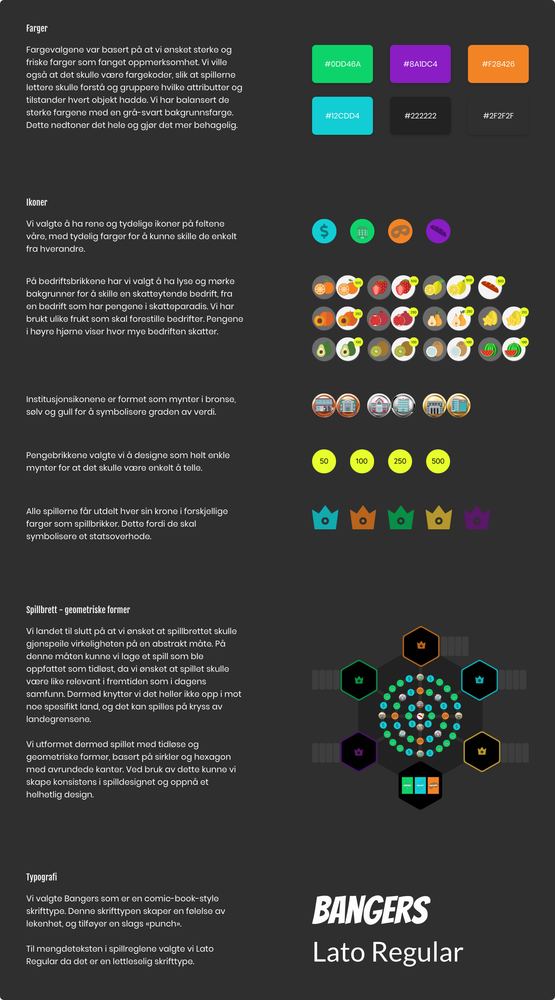

Introduksjon
I dette prosjektet skulle vi fokusere på hva som motiverer en spiller i et Serious Game til å lære om et spesifikt tema. Vi skulle utvikle et fysisk spill som skulle kunne spilles i grupper på videregående skoler. Spillet skulle hjelpe ungdom å forstå et tema, og vi kunne selv velge om vi ønsket å utvikle en companion app eller nettside tilhørende spillet. Vi kunne velge mellom temaene skatteflukt, fake news og fysisk aktivitet.
Problemstilling
«Hvordan utvikle et fysisk brettspill som gir kunnskap om skatteflukt til videregående elever på en morsom måte?»
Oppdragsgiver
Fagskolen Kristiania
Team
Linh Nguyen, Jacqueline Lømsland Carroza, Christina Bø, Øyvind Fjørtoft & Amanda Jullum Ericsson
Tidsrom
5. november til 10. desember 2020
Verktøy

Prosessen
Prosesshåndtering
Gjennom hele prosessen brukte vi Notion for å ha kontroll på fremdriften vår. Dette gjorde at vi hele tiden hadde konkrete mål og delmål å forholde oss til, og visste til enhver tid hva vi skulle gjøre.
Research
Informasjonsinnhenting
Vi valgte å gå for temaet som omhandlet skatteflukt, og ganske raskt forstod vi at vi ikke hadde noe særlig bakgrunnskunnskap rundt dette temaet. Vi gjorde derfor en god del research for å forstå temaet bedre. Vi tok utgangspunkt i følgende spørsmål da vi foretok research:
Skatteunngåelse er en lovlig form for skattereduksjon. Skatteflukt der penger blir flyttet til et skatteparadis går under betegnelsen skatteunngåelse.
Skatteunndragelse er en ulovlig form for skattereduksjon, der man oppgir feil opplysninger til myndighetene for å betale redusert skatt eller ingen skatt.
Advokatfirmaer og banker selger tjenester innenfor skatteunngåelse og skatteunndragelse, primært til svært rike mennesker.
Både privatpersoner og selskaper unngår/unndrar skatt. Flernasjonale selskaper flytter på verdensbasis rundt 5000 milliarder kroner til lavskattland årlig.
Tapte skatteinntekter betyr mindre penger til offentlige tjenester. Det har så klart innvirkning på den norske økonomien, men i utviklingsland så er dette et meget stort problem. FNs bærekraftsmål er ambisiøse: Innen 2030 skal ingen lenger leve i ekstrem fattigdom, alle barn skal gå på skole, alle skal ha et anstendig levebrød, ingen skal utelates - og alt innenfor planetens bæreevne. Når det da flyttes hundrevis av milliarder kroner i året, ut av land som virkelig har behov for pengene, så er det dessverre ikke sjans å nå disse målene.
Målgrupper
Målgruppen var i utgangspunktet spesifisert til å være videregående elever i oppgaveteksten, men vi ønsket også å inkludere en sekundærmålgruppe.
Primærmålgruppe
Elever på videregående skole i alderen 16 til 18 år
Sekundærmålgruppe
Familier med barn på ungdomsskole og videregående skole
Konseptutvikling
Hva skal de lære av spillet vi skal utvikle?
Vi ønsket å lære spillerne om temaet - konsekvenser av skatteflukt og fordeler ved å skatte. Vi ville at de skulle sitte igjen med en forståelse av at det er feil å bedrive skatteflukt, og få et relativt reelt bilde av hva skattepenger faktisk har å si for et land. At det lønner seg å bidra til samfunnet, og at de ikke skulle ta alle goder vi har i Norge i dag for gitt.
Hva skal spilleren oppleve i spillet vårt?
Vi ønsket at de skulle oppleve spillet spennende og morsomt, og at det skulle være passe utfordrende. Vi ønsket å kombinere strategiske valg med en liten porsjon flaks. Vi ønsket at det skulle bli litt konflikter mellom spillerne for å øke engasjementet og spenningen. Vi ville lage et spille som spillerne faktisk ønsket å spille om igjen, og som ikke var «ferdigspilt» etter en runde.
Inspirasjon
Ideer
Vi ønsket å ha et «open mindset» da vi jobbet med ideene til spillet, og derfor jobbet vi både med ideer sammen, men også hver for oss. Vi diskuterte fordeler og ulemper rundt hver idé, og valgte deretter ut ideer å iterere videre på.
Med tanke på at vi ikke hadde noe erfaring med spilldesign og spillutvikling fra tidligere, så syns vi det var veldig utfordrende å lage et spill som oppfylte alle krav. Vi ønsket at det skulle være et strategisk spill, men også inkludere noe flaks. Det måtte også være logisk, samtidig som det skulle ta hensyn til temaet og det vi ønsket å lære målgruppen. Til slutt endte vi opp med å iterere videre på ideen nederst til høyre.
Spillregler
Du er utnevnt til å være borgemester i en delstat. Delstaten mangler vesentlige offentlige tjenester, og oppgaven din som borgermester er å bygge opp samfunnet. Når oppdraget er fullført er det om å gjøre å komme først i mål.
Spilleren som brukte hatt sist starter spillet.
Brukertesting og iterasjoner
Iterasjon 1
Test av iterasjon 1 - Funn
Spillet virket gøy og enkelt å lære seg
Brettet var for lite, og det er kanskje morsommere dersom det utbedres til at spillerne kan ta ulike retninger, slik at det føles ut som spillerne har mer frihet og kan ta strategiske valg
Vi tok utgangspunkt i USA ved første iterasjon, men så at det kanskje var lurere å gå for fiktive navn
Skatteparadiset må ligge utenfor sirkelen
Iterasjon 2
I iterasjon 2 gjorde vi om på spillbrettet. Utvidet det, og la til muligheter for å gå mange flere veier. Vi skiftet også til fiktive navn og fjernet avhørskortene som ledet til mål. Skatteparadiset fikk navnet «Banana-Canaria» og ble lagt utenfor spillbrettet. Ellers var spillreglene de samme. Vi fant også ut at vi måtte prøve å sette en maksimal spilletid, så den ble satt til 1,5 time.
Test av iterasjon 2 - Funn
Ingen rakk å vinne innen tiden var omme
Spilltiden før man får en vinner er for lang på grunn av for mange veivalg
For mange regler, vi bør forenkle
Vi bør revurdere antall oppdrag, holde oss til max 3 (for eksempel sykehus, politistasjon og domstol) , ellers tar det for lang tid. Hvis man eventuelt vil ha lenger spilletid, kan man selv velge å utvide til flere oppdrag
Med tanke på at brettet er så stort, så bør vi kanskje ha noen flyplasser plassert i ytterkantene, slik at man kan fly til den andre siden
Vi må ha større fokus på forhandling, for å øke konflikter. Man bør kunne argumentere for et bytte
Skattesnylteren har egentlig ikke den effekten vi ønsker, da det ikke gir noe særlig store konsekvenser
Iterasjon 3
I iterasjon 3 gjorde vi nok engang om på spillbrettet. Vi ønsket fortsatt å ha med muligheten til å gå flere veier, men så oss nødt til å begrense det. Vi har også lagt til en skattesnylter per spiller, slik at det potensielt kan være mange ansatte som er blokkert. Vi ville se om det kunne øke følelsen av konsekvensene ved skatteflukt.
Test av iterasjon 3 - Funn
I løpet av denne testen fant vi ut at skattesnylter-brikken egentlig ikke hadde noen effekt, da man ikke fikk den effekten vi var ute etter. Dermed bestemte vi oss for å fjerne skattesnylteren og skatteparadiset
Etter veiledning med lærer, så ønsket han også at vi kunne utforske muligheten til å få med penger, da dette er veldig sentralt i temaet. Og med tanke på at vi så at vi måtte fjerne skattesnylteren, så kunne vi erstatte dette med bedrifter og penger, for å gjøre spillet mer virkelighetsnært. Dette ga også mer mening med tanke på at det er skatteflukt fra bedrifter som gir størst innvirkning på samfunnet
Iterasjon 4
I denne iterasjonen tok vi en real oppussing. Vi gikk over til at spillerne skulle ha hvert sitt land der de hadde rollen som statsoverhode.
Vi gikk også bort i fra at spillerne skulle samle ansatte og fjernet skattesnylteren. Vi fokuserte heller på at spillerne skulle samle bedrifter, og at det skulle lønne seg å ha skatteytende bedrifter i landet sitt.
Test av iterasjon 4 - Funn
Spilletid: 1,5 t
Ingen vant i løpet av runden
Morsomt, engasjerende og lærerikt å spille
Får en følelse av hva slags innvirkning skattesnylteri har på et samfunn
Designet bør endres, appellerer ikke til målgruppen
Bør gjøre noen endringer slik at man har mulighet til å vinne i løpet av runden
Endelig konsept
I Skattejaget fungerer du som statsoverhode, og målet ditt er å bygge opp et velfungerende velferdssamfunn. For å vinne spillet må du samle opp 3 forskjellige institusjoner, én fra hver prisklasse, og komme deg raskest mulig tilbake til samfunnet ditt, før noen av medspillerne dine «setter kjepper i hjulene» for deg!
Game loop
Spillbrettet

Regelverk
Spilldesign
De grunnleggende elementene
Story
Hvert år gjemmer selskaper milliarder av penger i skatteparadis for å unngå og betale skatt. Selv om det ikke er direkte ulovlig, så blir det ansett som umoralsk og udemokratisk ovenfor det landet man egentlig skal skatte til. Dette er penger som kan gå til blant annet utvikling av offentlige sektorer, men som heller går «i lomma» på store selskaper eller privatpersoner med store lommebøker.
Driv og engasjement
Hvert år gjemmer selskaper milliarder av penger i skatteparadis for å unngå og betale skatt. Selv om det ikke er direkte ulovlig, så blir det ansett som umoralsk og udemokratisk ovenfor det landet man egentlig skal skatte til. Dette er penger som kan gå til blant annet utvikling av offentlige sektorer, men som heller går «i lomma» på store selskaper eller privatpersoner med store lommebøker.
Mekanikk
Mekanikk er reglene og systemene i spillet. Vi har prøvd å balansere mekanikkene i spillet basert på følgende:
Kort vs langt spill
Spilletiden i spillet vårt kan anses som en blanding av kort og langt. Spilletiden avhenger av hvor mange spillere som deltar, samt at spillerne selv kan regulere spilletiden ved å ta egne valg. For eksempel kan spillerne i starten bestemme seg for hvor mange institusjoner hver spiller skal samle før de kan gå til mål, på denne måten kan de minske eller forlenge spilletiden.
Våre tester viser at dersom man samler 3 institusjoner og er 5 spillere, så er spilletiden på ca. 1,5 time.
Tid - turbasert og race
Spillet er turbasert, hver spiller har «uendelig» med tid til å gjøre trekket sitt, som for eksempel i sjakk. Samtidig er det også et race, med tanke på at målet er å være førstemann til å samle alle institusjonene, komme seg tilbake til samfunnet sitt, og vinne spillet.
Symmetri
Spillet er symmetrisk. Alle samfunnene er plassert slik at det blir rettferdig, da de har samme utgangspunkt til å vinne spillet. Det er valgene de gjør underveis som avgjør spillet.
Konkurranse vs samarbeid
Spillet er et konkurransedrevet spill, der alle konkurrerer mot alle. Spillet skaper dermed spenning og vekker konkurranseinnstinktet til hver spiller.
Etter hvert som spillet utvikler seg, og hver spiller har klart å samle opp skatteinntekter og institusjoner til samfunnet sitt, så øker pulsen og spenningen. Da kan også konflikter oppstå og intensiteten i konkurransen øke.
Progresjon
For hver gang terningen kastes, så skjer det en progresjon i spillet. På hvert felt spilleren lander på, så vil spilleren enten trekke et skattekort, et bedriftskort, kjøpe institusjon eller prøve å sabotere. For å få frem følelsen av progresjon har vi hele tiden hatt spørsmålet om hva som motiverer spilleren, i bakhodet. Svaret på dette spørsmålet henger sammen med belønning og straff, samt tilfeldighet og strategi.
Estetikk
Systemdesign
Teknologi
Dette prosjektet var jo en av mange som havnet under pandemien, og derfor ble det å utvikle et fysisk brettspill litt utfordrende fra hvert vårt hjemmekontor. Likevel har vi hele veien tatt utgangspunkt i at det skal kunne produseres i en fysisk form. Vi syns likevel det er fint at det både kan spilles i analog og i digital form. Ved hjelp av 3D printteknologi så ser vi for oss at spillet blir seende slik ut i fysisk form:
Programmering
Companion app
Vi utviklet også en virtuell companion app slik at spillerne kan velge å trekke spillkortene via en app, istedenfor i fysisk form. Dette åpner opp for muligheten til å utvikle flere kort, oppdatere kort, og rett og slett videreutvikle spillet på en enklere måte. I tillegg unngår spillerne at kort blir borte eller ødelagt.
Appen er en Electron-app, og er kodet med Svelte. Den fungerer slik at kortene åpnes og lukkes ved hjelp av en flip-funksjon. Spillerne trykker på kortet en gang for å åpne kortet, og en gang til for å lukke kortet.
Hva har jeg lært gjennom prosjektet?
- Jeg har lært at spilldesign krever mye logisk tenkning. Det var veldig lærerikt med en slik oppgave, da vi fikk utfordret oss på å tenke litt annerledes, slik at spillet skulle bli så logisk som mulig
- Hvor bra et digitalt samarbeid mellom 5 personer faktisk kan være. Vi jobbet digitalt gjennom hele prosjektet, og det kan i utgangspunktet være krevende når man er så mange personer, og spesielt når oppgaven egentlig var å lage et fysisk spill. Likevel gikk det veldig fint, og vi samarbeidet godt
- Det var jeg som hadde ansvar for å utvikle av companion appen, og det var veldig lærerikt å få kode litt igjen. Jeg fikk enda litt mer erfaring med Svelte og Electron, samt erfaring med animasjon